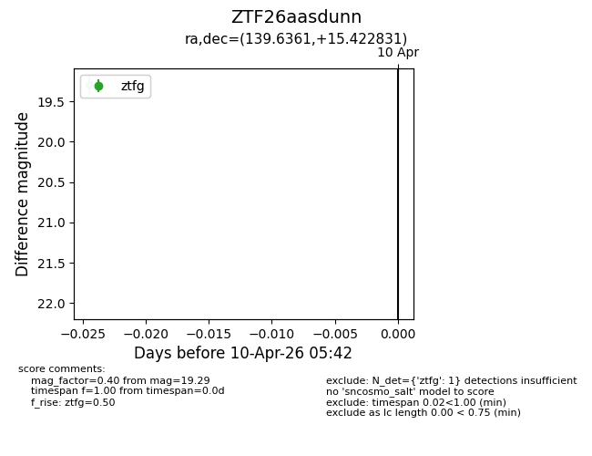
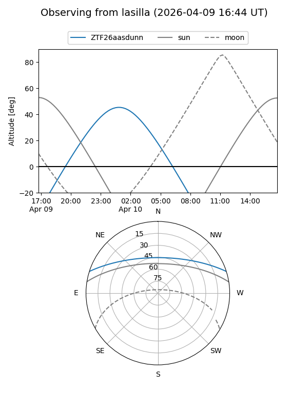
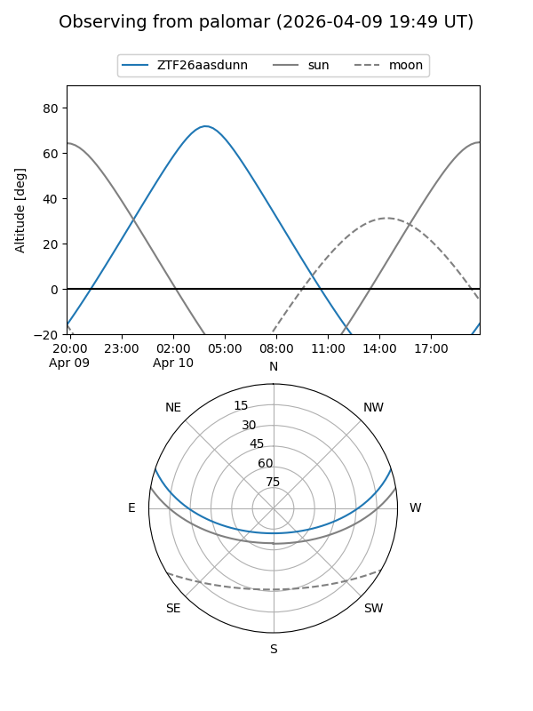

ZTF26aasdunn
Target ZTF26aasdunn at 2026-04-10 05:50
Aliases and brokers:
FINK: link
Lasair: link
ALeRCE: link
alt names
ZTF26aasdunn (ztf,fink_ztf)
Coordinates:
equatorial (ra, dec) = 139.6361,+15.42283
equatorial (HMS+DMS) = 09:18:32.66,+15:25:22.19
galactic (l, b) = (214.8962,+39.41331)
Flags:
Photometry:
last ztfg=19.29
1 ztfg detections
Lightcurve

Visibility


Additional plots